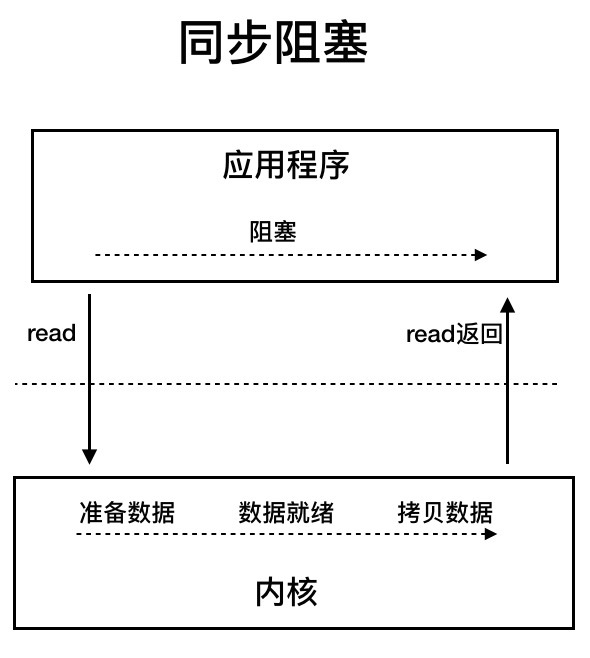
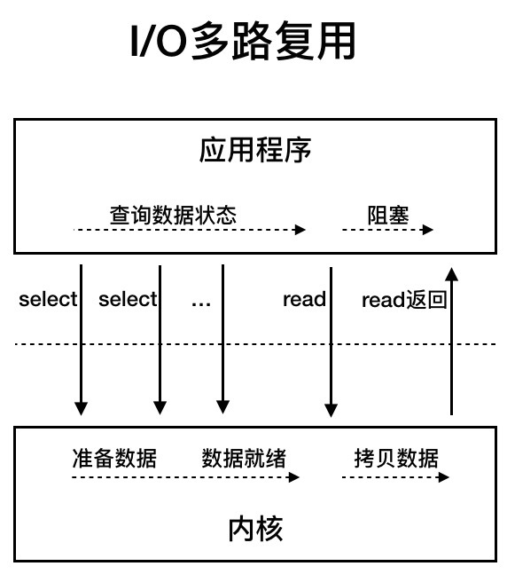
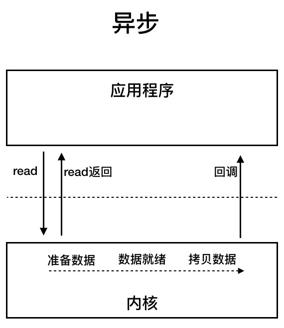
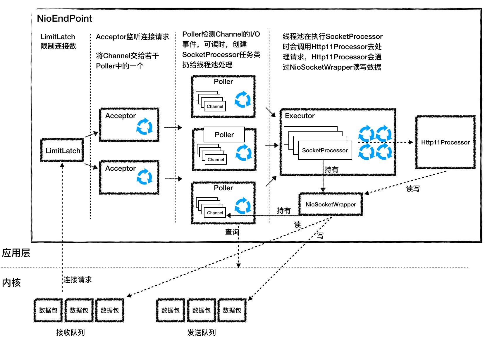

- 00 开篇词 Java程序员如何快速成长？.md.html
- 01 Web容器学习路径.md.html
- 02 HTTP协议必知必会.md.html
- 03 你应该知道的Servlet规范和Servlet容器.md.html
- 04 实战：纯手工打造和运行一个Servlet.md.html
- 05 Tomcat系统架构（上）： 连接器是如何设计的？.md.html
- 06 Tomcat系统架构（下）：聊聊多层容器的设计.md.html
- 07 Tomcat如何实现一键式启停？.md.html
- 08 Tomcat的“高层们”都负责做什么？.md.html
- 09 比较：Jetty架构特点之Connector组件.md.html
- 10 比较：Jetty架构特点之Handler组件.md.html
- 11 总结：从Tomcat和Jetty中提炼组件化设计规范.md.html
- 12 实战：优化并提高Tomcat启动速度.md.html
- 13 热点问题答疑（1）：如何学习源码？.md.html
- 14 NioEndpoint组件：Tomcat如何实现非阻塞I_O？.md.html
- 15 Nio2Endpoint组件：Tomcat如何实现异步I_O？.md.html
- 16 AprEndpoint组件：Tomcat APR提高I_O性能的秘密.md.html
- 17 Executor组件：Tomcat如何扩展Java线程池？.md.html
- 18 新特性：Tomcat如何支持WebSocket？.md.html
- 19 比较：Jetty的线程策略EatWhatYouKill.md.html
- 20 总结：Tomcat和Jetty中的对象池技术.md.html
- 21 总结：Tomcat和Jetty的高性能、高并发之道.md.html
- 22 热点问题答疑（2）：内核如何阻塞与唤醒进程？.md.html
- 23 Host容器：Tomcat如何实现热部署和热加载？.md.html
- 24 Context容器（上）：Tomcat如何打破双亲委托机制？.md.html
- 25 Context容器（中）：Tomcat如何隔离Web应用？.md.html
- 26 Context容器（下）：Tomcat如何实现Servlet规范？.md.html
- 27 新特性：Tomcat如何支持异步Servlet？.md.html
- 28 新特性：Spring Boot如何使用内嵌式的Tomcat和Jetty？.md.html
- 29 比较：Jetty如何实现具有上下文信息的责任链？.md.html
- 30 热点问题答疑（3）：Spring框架中的设计模式.md.html
- 31 Logger组件：Tomcat的日志框架及实战.md.html
- 32 Manager组件：Tomcat的Session管理机制解析.md.html
- 33 Cluster组件：Tomcat的集群通信原理.md.html
- 34 JVM GC原理及调优的基本思路.md.html
- 35 如何监控Tomcat的性能？.md.html
- 36 Tomcat I_O和线程池的并发调优.md.html
- 37 Tomcat内存溢出的原因分析及调优.md.html
- 38 Tomcat拒绝连接原因分析及网络优化.md.html
- 39 Tomcat进程占用CPU过高怎么办？.md.html
- 40 谈谈Jetty性能调优的思路.md.html
- 41 热点问题答疑（4）： Tomcat和Jetty有哪些不同？.md.html
- 特别放送 如何持续保持对学习的兴趣？.md.html
- 结束语 静下心来，品味经典.md.html
- 捐赠
14 NioEndpoint组件：Tomcat如何实现非阻塞I_O？
UNIX系统下的I/O模型有5种：同步阻塞I/O、同步非阻塞I/O、I/O多路复用、信号驱动I/O和异步I/O。这些名词我们好像都似曾相识，但这些I/O通信模型有什么区别？同步和阻塞似乎是一回事，到底有什么不同？等一下，在这之前你是不是应该问自己一个终极问题：什么是I/O？为什么需要这些I/O模型？
所谓的I/O就是计算机内存与外部设备之间拷贝数据的过程。我们知道CPU访问内存的速度远远高于外部设备，因此CPU是先把外部设备的数据读到内存里，然后再进行处理。请考虑一下这个场景，当你的程序通过CPU向外部设备发出一个读指令时，数据从外部设备拷贝到内存往往需要一段时间，这个时候CPU没事干了，你的程序是主动把CPU让给别人？还是让CPU不停地查：数据到了吗，数据到了吗……
这就是I/O模型要解决的问题。今天我会先说说各种I/O模型的区别，然后重点分析Tomcat的NioEndpoint组件是如何实现非阻塞I/O模型的。
Java I/O模型
对于一个网络I/O通信过程，比如网络数据读取，会涉及两个对象，一个是调用这个I/O操作的用户线程，另外一个就是操作系统内核。一个进程的地址空间分为用户空间和内核空间，用户线程不能直接访问内核空间。
当用户线程发起I/O操作后，网络数据读取操作会经历两个步骤：
- 用户线程等待内核将数据从网卡拷贝到内核空间。
- 内核将数据从内核空间拷贝到用户空间。
各种I/O模型的区别就是：它们实现这两个步骤的方式是不一样的。
同步阻塞I/O：用户线程发起read调用后就阻塞了，让出CPU。内核等待网卡数据到来，把数据从网卡拷贝到内核空间，接着把数据拷贝到用户空间，再把用户线程叫醒。

同步非阻塞I/O：用户线程不断的发起read调用，数据没到内核空间时，每次都返回失败，直到数据到了内核空间，这一次read调用后，在等待数据从内核空间拷贝到用户空间这段时间里，线程还是阻塞的，等数据到了用户空间再把线程叫醒。

I/O多路复用：用户线程的读取操作分成两步了，线程先发起select调用，目的是问内核数据准备好了吗？等内核把数据准备好了，用户线程再发起read调用。在等待数据从内核空间拷贝到用户空间这段时间里，线程还是阻塞的。那为什么叫I/O多路复用呢？因为一次select调用可以向内核查多个数据通道（Channel）的状态，所以叫多路复用。

异步I/O：用户线程发起read调用的同时注册一个回调函数，read立即返回，等内核将数据准备好后，再调用指定的回调函数完成处理。在这个过程中，用户线程一直没有阻塞。

NioEndpoint组件
Tomcat的NioEndpoint组件实现了I/O多路复用模型，接下来我会介绍NioEndpoint的实现原理，下一期我会介绍Tomcat如何实现异步I/O模型。
总体工作流程
我们知道，对于Java的多路复用器的使用，无非是两步：
创建一个Selector，在它身上注册各种感兴趣的事件，然后调用select方法，等待感兴趣的事情发生。
感兴趣的事情发生了，比如可以读了，这时便创建一个新的线程从Channel中读数据。
Tomcat的NioEndpoint组件虽然实现比较复杂，但基本原理就是上面两步。我们先来看看它有哪些组件，它一共包含LimitLatch、Acceptor、Poller、SocketProcessor和Executor共5个组件，它们的工作过程如下图所示。

LimitLatch是连接控制器，它负责控制最大连接数，NIO模式下默认是10000，达到这个阈值后，连接请求被拒绝。
Acceptor跑在一个单独的线程里，它在一个死循环里调用accept方法来接收新连接，一旦有新的连接请求到来，accept方法返回一个Channel对象，接着把Channel对象交给Poller去处理。
Poller的本质是一个Selector，也跑在单独线程里。Poller在内部维护一个Channel数组，它在一个死循环里不断检测Channel的数据就绪状态，一旦有Channel可读，就生成一个SocketProcessor任务对象扔给Executor去处理。
Executor就是线程池，负责运行SocketProcessor任务类，SocketProcessor的run方法会调用Http11Processor来读取和解析请求数据。我们知道，Http11Processor是应用层协议的封装，它会调用容器获得响应，再把响应通过Channel写出。
接下来我详细介绍一下各组件的设计特点。
LimitLatch
LimitLatch用来控制连接个数，当连接数到达最大时阻塞线程，直到后续组件处理完一个连接后将连接数减1。请你注意到达最大连接数后操作系统底层还是会接收客户端连接，但用户层已经不再接收。LimitLatch的核心代码如下：
public class LimitLatch {
private class Sync extends AbstractQueuedSynchronizer {
@Override
protected int tryAcquireShared() {
long newCount = count.incrementAndGet();
if (newCount > limit) {
count.decrementAndGet();
return -1;
} else {
return 1;
}
}
@Override
protected boolean tryReleaseShared(int arg) {
count.decrementAndGet();
return true;
}
}
private final Sync sync;
private final AtomicLong count;
private volatile long limit;
//线程调用这个方法来获得接收新连接的许可，线程可能被阻塞
public void countUpOrAwait() throws InterruptedException {
sync.acquireSharedInterruptibly(1);
}
//调用这个方法来释放一个连接许可，那么前面阻塞的线程可能被唤醒
public long countDown() {
sync.releaseShared(0);
long result = getCount();
return result;
}
}
从上面的代码我们看到，LimitLatch内步定义了内部类Sync，而Sync扩展了AQS，AQS是Java并发包中的一个核心类，它在内部维护一个状态和一个线程队列，可以用来控制线程什么时候挂起，什么时候唤醒。我们可以扩展它来实现自己的同步器，实际上Java并发包里的锁和条件变量等等都是通过AQS来实现的，而这里的LimitLatch也不例外。
理解上面的代码时有两个要点：
用户线程通过调用LimitLatch的countUpOrAwait方法来拿到锁，如果暂时无法获取，这个线程会被阻塞到AQS的队列中。那AQS怎么知道是阻塞还是不阻塞用户线程呢？其实这是由AQS的使用者来决定的，也就是内部类Sync来决定的，因为Sync类重写了AQS的tryAcquireShared()方法。它的实现逻辑是如果当前连接数count小于limit，线程能获取锁，返回1，否则返回-1。
如何用户线程被阻塞到了AQS的队列，那什么时候唤醒呢？同样是由Sync内部类决定，Sync重写了AQS的tryReleaseShared()方法，其实就是当一个连接请求处理完了，这时又可以接收一个新连接了，这样前面阻塞的线程将会被唤醒。
其实你会发现AQS就是一个骨架抽象类，它帮我们搭了个架子，用来控制线程的阻塞和唤醒。具体什么时候阻塞、什么时候唤醒由你来决定。我们还注意到，当前线程数被定义成原子变量AtomicLong，而limit变量用volatile关键字来修饰，这些并发编程的实际运用。
Acceptor
Acceptor实现了Runnable接口，因此可以跑在单独线程里。一个端口号只能对应一个ServerSocketChannel，因此这个ServerSocketChannel是在多个Acceptor线程之间共享的，它是Endpoint的属性，由Endpoint完成初始化和端口绑定。初始化过程如下：
serverSock = ServerSocketChannel.open();
serverSock.socket().bind(addr,getAcceptCount());
serverSock.configureBlocking(true);
从上面的初始化代码我们可以看到两个关键信息：
bind方法的第二个参数表示操作系统的等待队列长度，我在上面提到，当应用层面的连接数到达最大值时，操作系统可以继续接收连接，那么操作系统能继续接收的最大连接数就是这个队列长度，可以通过acceptCount参数配置，默认是100。
ServerSocketChannel被设置成阻塞模式，也就是说它是以阻塞的方式接收连接的。
ServerSocketChannel通过accept()接受新的连接，accept()方法返回获得SocketChannel对象，然后将SocketChannel对象封装在一个PollerEvent对象中，并将PollerEvent对象压入Poller的Queue里，这是个典型的“生产者-消费者”模式，Acceptor与Poller线程之间通过Queue通信。
Poller
Poller本质是一个Selector，它内部维护一个Queue，这个Queue定义如下：
private final SynchronizedQueue<PollerEvent> events = new SynchronizedQueue<>();
SynchronizedQueue的方法比如offer、poll、size和clear方法，都使用了synchronized关键字进行修饰，用来保证同一时刻只有一个Acceptor线程对Queue进行读写。同时有多个Poller线程在运行，每个Poller线程都有自己的Queue。每个Poller线程可能同时被多个Acceptor线程调用来注册PollerEvent。同样Poller的个数可以通过pollers参数配置。
Poller不断的通过内部的Selector对象向内核查询Channel的状态，一旦可读就生成任务类SocketProcessor交给Executor去处理。Poller的另一个重要任务是循环遍历检查自己所管理的SocketChannel是否已经超时，如果有超时就关闭这个SocketChannel。
SocketProcessor
我们知道，Poller会创建SocketProcessor任务类交给线程池处理，而SocketProcessor实现了Runnable接口，用来定义Executor中线程所执行的任务，主要就是调用Http11Processor组件来处理请求。Http11Processor读取Channel的数据来生成ServletRequest对象，这里请你注意：
Http11Processor并不是直接读取Channel的。这是因为Tomcat支持同步非阻塞I/O模型和异步I/O模型，在Java API中，相应的Channel类也是不一样的，比如有AsynchronousSocketChannel和SocketChannel，为了对Http11Processor屏蔽这些差异，Tomcat设计了一个包装类叫作SocketWrapper，Http11Processor只调用SocketWrapper的方法去读写数据。
Executor
Executor是Tomcat定制版的线程池，它负责创建真正干活的工作线程，干什么活呢？就是执行SocketProcessor的run方法，也就是解析请求并通过容器来处理请求，最终会调用到我们的Servlet。后面我会用专门的篇幅介绍Tomcat怎么扩展和使用Java原生的线程池。
高并发思路
在弄清楚NioEndpoint的实现原理后，我们来考虑一个重要的问题，怎么把这个过程做到高并发呢？
高并发就是能快速地处理大量的请求，需要合理设计线程模型让CPU忙起来，尽量不要让线程阻塞，因为一阻塞，CPU就闲下来了。另外就是有多少任务，就用相应规模的线程数去处理。我们注意到NioEndpoint要完成三件事情：接收连接、检测I/O事件以及处理请求，那么最核心的就是把这三件事情分开，用不同规模的线程数去处理，比如用专门的线程组去跑Acceptor，并且Acceptor的个数可以配置；用专门的线程组去跑Poller，Poller的个数也可以配置；最后具体任务的执行也由专门的线程池来处理，也可以配置线程池的大小。
本期精华
I/O模型是为了解决内存和外部设备速度差异的问题。我们平时说的阻塞或非阻塞是指应用程序在发起I/O操作时，是立即返回还是等待。而同步和异步，是指应用程序在与内核通信时，数据从内核空间到应用空间的拷贝，是由内核主动发起还是由应用程序来触发。
在Tomcat中，Endpoint组件的主要工作就是处理I/O，而NioEndpoint利用Java NIO API实现了多路复用I/O模型。其中关键的一点是，读写数据的线程自己不会阻塞在I/O等待上，而是把这个工作交给Selector。同时Tomcat在这个过程中运用到了很多Java并发编程技术，比如AQS、原子类、并发容器，线程池等，都值得我们去细细品味。
课后思考
Tomcat的NioEndpoint组件的名字中有NIO，NIO是非阻塞的意思，似乎说的是同步非阻塞I/O模型，但是NioEndpoint又是调用Java的的Selector来实现的，我们知道Selector指的是I/O多路复用器，也就是我们说的I/O多路复用模型，这不是矛盾了吗？
不知道今天的内容你消化得如何？如果还有疑问，请大胆的在留言区提问，也欢迎你把你的课后思考和心得记录下来，与我和其他同学一起讨论。如果你觉得今天有所收获，欢迎你把它分享给你的朋友。
© 2019 - 2023 Liangliang Lee. Powered by gin and hexo-theme-book.